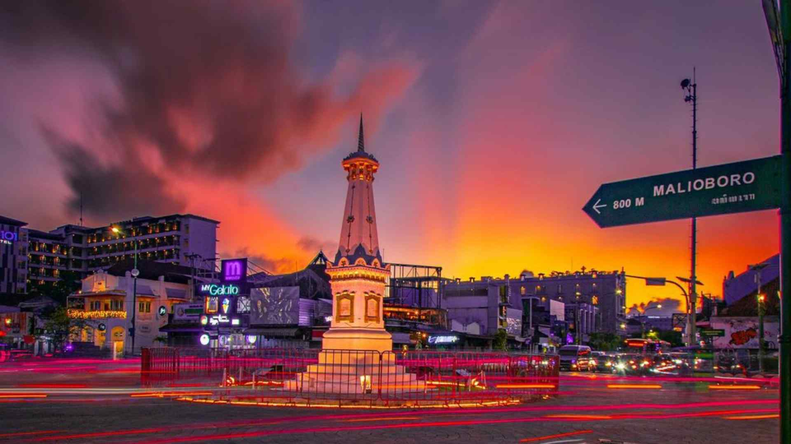
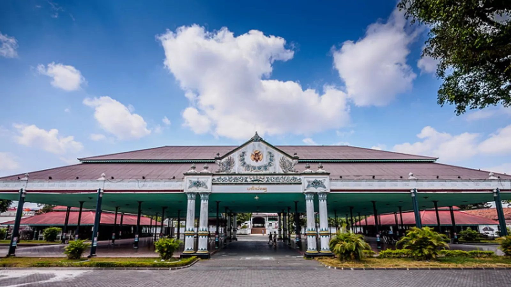
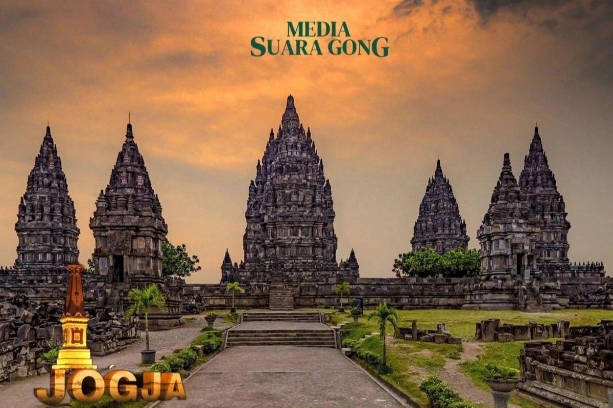
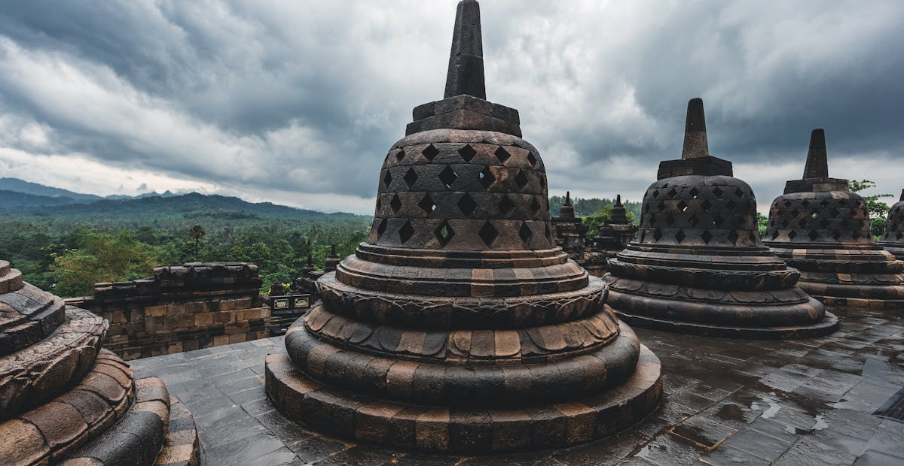

Wonderful IndonesiaPesona Alam dan Budaya Nusantara |
||
Top Destinasi
|
Wisata YogyakartaYogyakarta merupakan salah satu destinasi wisata unggulan di Indonesia, dikenal sebagai Jantung Budaya Jawa dan pusat seni serta sejarah. Kota ini menawarkan warisan budaya yang kaya, dengan destinasi utama yang mencerminkan kemegahan masa lalu dan tradisi yang hidup hingga kini. 🗺️ Destinasi Unggulan - Candi Borobudur: Mahakarya arsitektur Buddha terbesar di dunia, menawarkan panorama alam yang memukau dan ukiran relief yang menceritakan kisah kehidupan. - Candi Prambanan: Kompleks candi Hindu yang megah, terkenal dengan legenda Roro Jonggrang dan arsitektur runcingnya yang dramatis. - Keraton Yogyakarta: Pusat pemerintahan dan tempat tinggal Sultan yang masih aktif, memungkinkan pengunjung merasakan langsung denyut nadi tradisi dan kebudayaan Jawa. |
Galeri   |